目录
- 前言
- 下载Raspberry Pi OS
- 烧录Raspberry Pi OS
- 配置启用SSH
- 查找树莓派IP
- 通过SSH连接到树莓派
- 配置树莓派
前言
同事有一台闲置的树莓派3b
正好近来有点时间。来研究一下。
下载Raspberry Pi OS
官网提供3个版本上载
- Raspberry Pi OS (32-bit) with desktop and recommended software
- Raspberry Pi OS (32-bit) with desktop
- Raspberry Pi OS (32-bit) Lite
本次我们下载的是Raspberry Pi OS (32-bit) Lite
对于桌面版本，只是提供了图形化界面。但是要与HDMI配合才能达到最好效果
下载后，我们得到一个2020-08-20-raspios-buster-armhf-lite.zip文件
然后我们解压出这个zip，然后得到2020-08-20-raspios-buster-armhf-lite.img
烧录Raspberry Pi OS
我们要把这个img文件通过工具烧录到我们的SD卡上。
这里我使用的是Etcher Etcher下载
打开后如下图
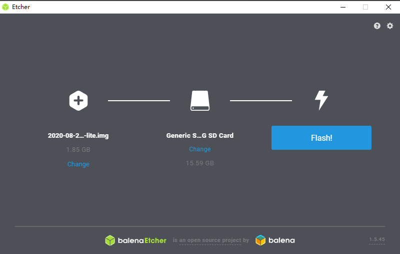
就3个步骤
- 选择才下载压缩出来的img
- 选择SD卡（先把SD卡插入电脑，他会默认发现）
- 点击Flash，他就会自动烧录了
当然其它很多介绍树莓派烧录的文章都是推荐用Win32 Disk Imager
Win32 Disk Imager下载地址
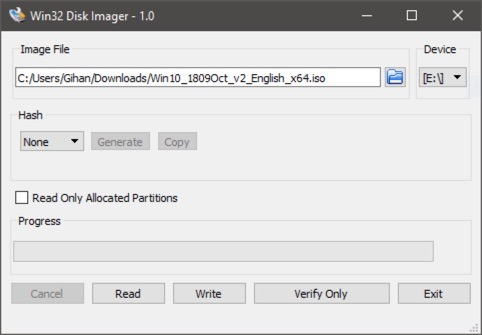
配置启用SSH
等待烧录完成，然后我们就可以把SD卡插到树莓派上面就可以开机了
但是这样的话，我们没有办法通过SSH连接到树莓派
所以在烧录完成后，我们要先把SD卡从电脑里面弹出来（因为烧录后，电脑已经不能发现原SD卡了）
弹出后，再插入到电脑，我们就可以看到一个boot的盘符
我们在这个盘符下面新建一个名字为ssh的空文件（名称为ssh,无后缀）
然后我们再插入树莓派。把树莓派接通电源。到此就完成了树莓派系统的安装
并且已经把SSH服务也开启了。
查找树莓派IP
因为树莓派在现有的情况下，只有一台裸机，没有显示器。
所以我们要连接树莓派，就要先知道树莓派的IP。这样才能通过SSH连接
查找树莓派IP有很多方法
这里我介绍3种
通过windows的arp命令
1 | arp -a |
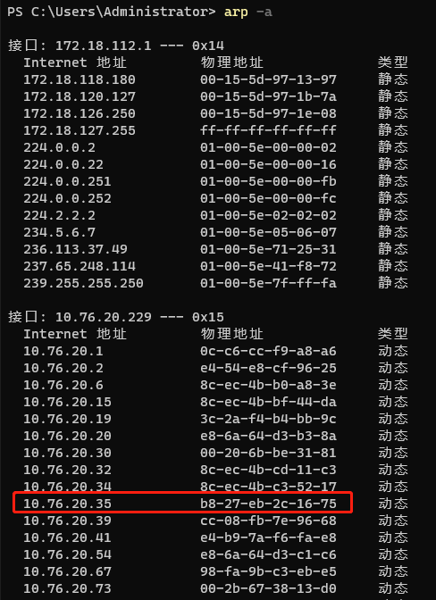
看到物理地址前面“b8-27-eb”的字符就表示是树莓派设备
这样我们就知道树莓派的IP为:10.76.20.35
通过Advanced IP Scanner扫描IP
Advanced IP Scanner Advanced IP Scanner下载
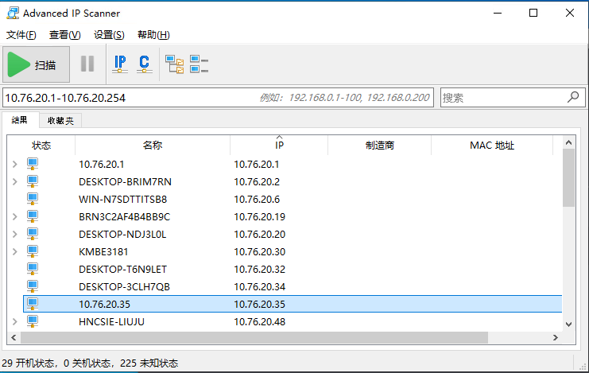
这样名称和IP都是一样的基本上是树莓派了
通过路由器查找
因为只要连接到了路由器，这样路由器就一定知道哪些设备连接上了
所以一般在路由器的设备连接表里可以查到IP
当然这只对于设备少的情况可以这样找
通过SSH连接到树莓派
1 | ssh pi@10.76.20.35 |
树莓派默认用户为:pi 默认密码为：raspberry
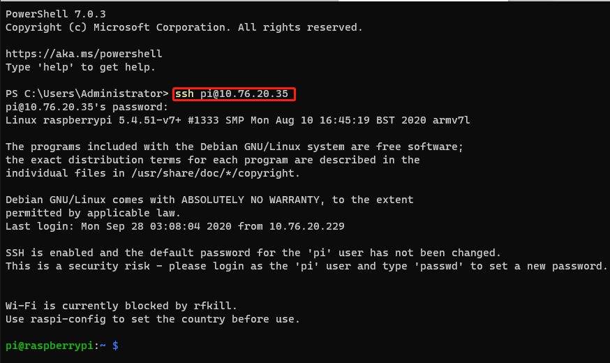
配置树莓派
修改默认密码
1 | passwd |
通过输入passwd来修改默认用户pi的密码
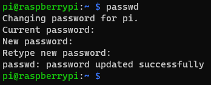
启用WiFi和Bluetooth
通过SSH连接上来就可以看到
Wi-Fi is currently blocked by rfkill
说明WiFi已经被rfkill禁用了
所以我们可以通过rfkill相关的命令，把WiFi和蓝牙启用
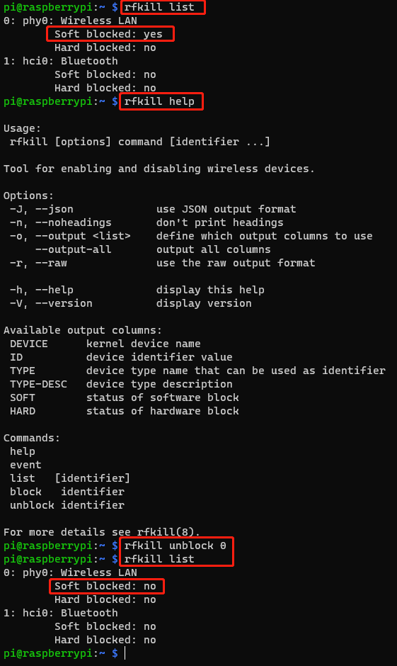
启用root帐号
1 | #给root帐号设置密码 |
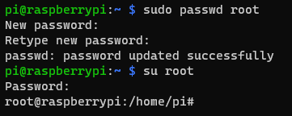
通过raspi-config配置树莓派
1 | raspi-config |
通过运行raspi-config打开树莓派配置工具
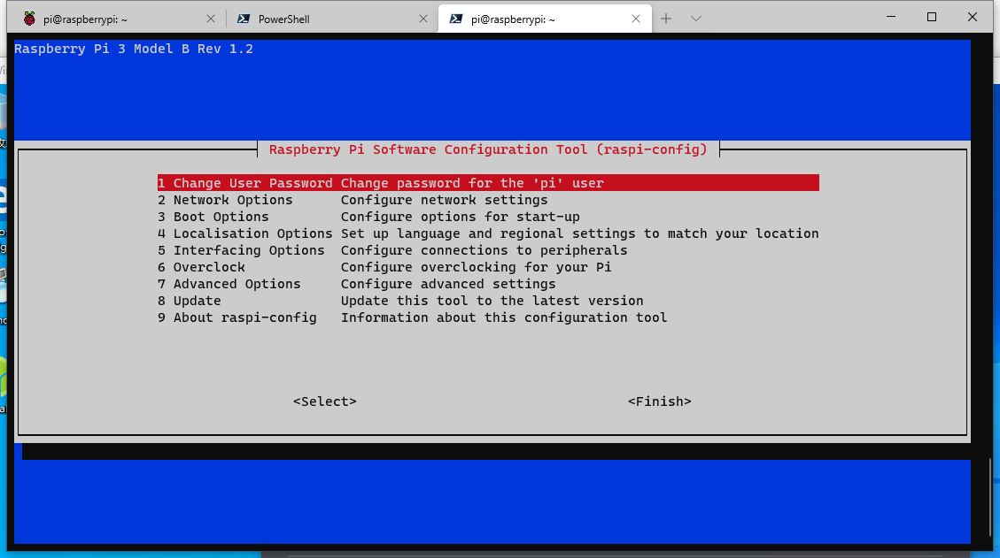
- 修改用户密码
- 网络配置
- 启动设置
- 区域/语言设置
- 接口配置
- 超频
- 高级配置
- 更新配置工具
- 有关配置工具信息
修改网络
配置网卡为固定IP地址
1 | nano /etc/dhcpcd.conf |
配置无线网卡为固定IP
1 | nano /etc/dhcpcd.conf |
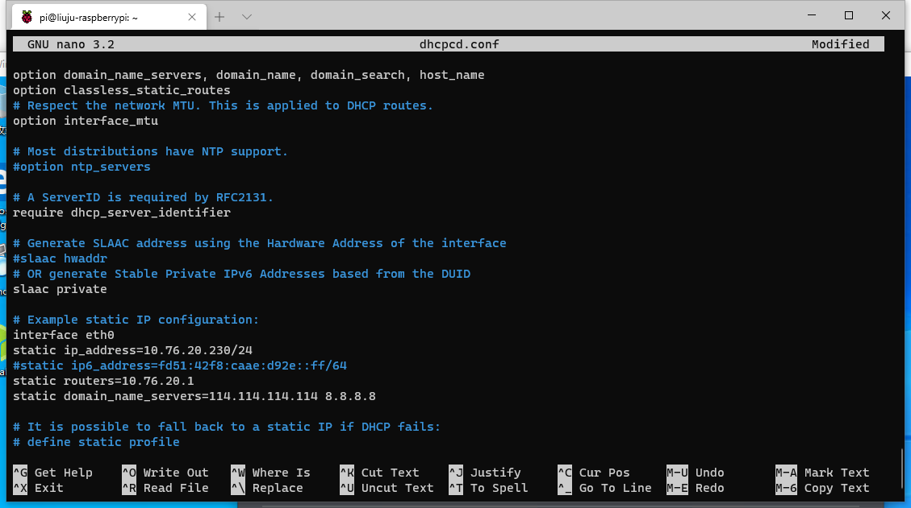
可以通过 ip addr查看当前所有IP
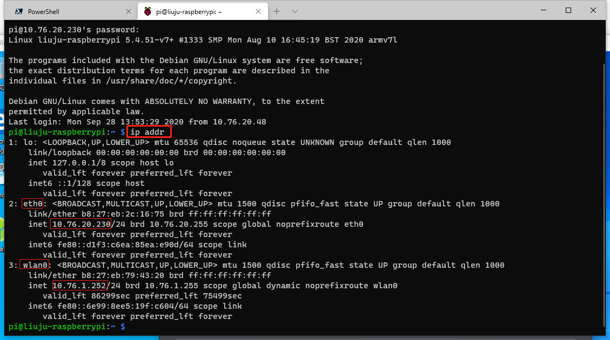
修改更新源为清华大学开源软件镜像站
1 | sudo nano /etc/apt/sources.list |
1 | sudo nano /etc/apt/sources.list.d/raspi.list |
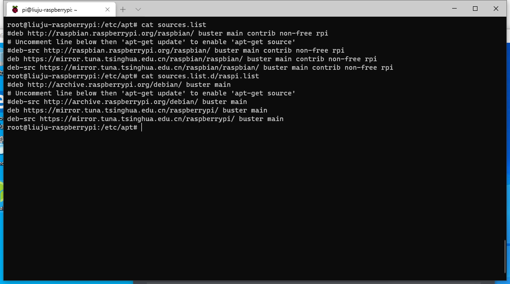